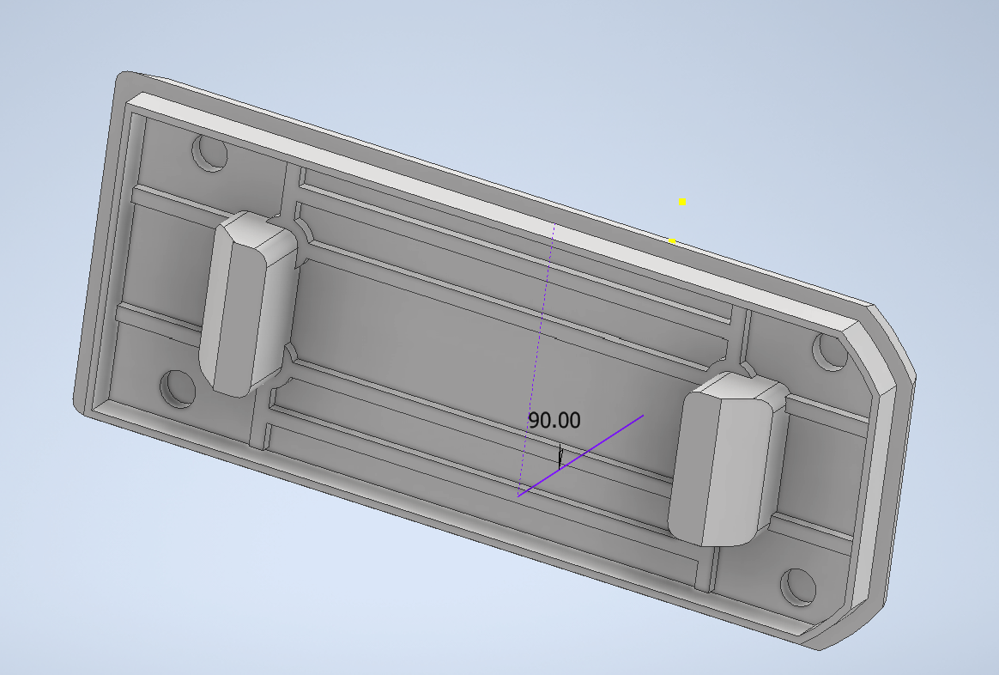

The Problem
Rotary cuff tears patients are diagnosed by surgeons to determine if they need surgery. During my co-op in Edmonton, I learned that many patients from rural parts of Alberta would have to skip days at work and travel extensively to visit the doctor, leading to a costly, time consuming visit. Sometimes, after months on the waitlist the diagnosis would result in no surgery being needed but rather therapy, which could have begun weeks ago.
The Inverted Can Test is a test used by surgeons to determine the severity of the shoulder injury and is based on their expertise and years of experience.
The Solution
Our team at the lab partnered with a surgeon to replicate the test, by collecting data while the test is being performed. Through a combination of force sensors, accelerometers, and an ESP32, the data analysis picked up on relevant indicators.
Mechanical Design
I led the design and development of the printed circuit board's housing unit as well as the overall device design. The design needed to be small, easily grippable and a sleekness drawn from the Magic Mouse as inspiration.
What I did
- I conducted design interviews with the surgeon as well as non physicians to understand user needs both at an expert and high level
- Used Autodesk Inventor, Fusion360 and Bambu to design and print 3D models
- Used DFM principles to speed up prototyping time. Delivered an average of 1 complete prototype per week.
- Researched different hand held devices and hand grips for optimal ergonomics
- Used a multitude of design mediums such as sketching, clay and 3D scanners and the Double Diamond approach to design

While in this role, I was also able to branch out and learn other skills such as:
- PCB design using EasyEda, learned how to connect wires through vias
- Visited different labs to select the correct silicone biomaterial padding under the device